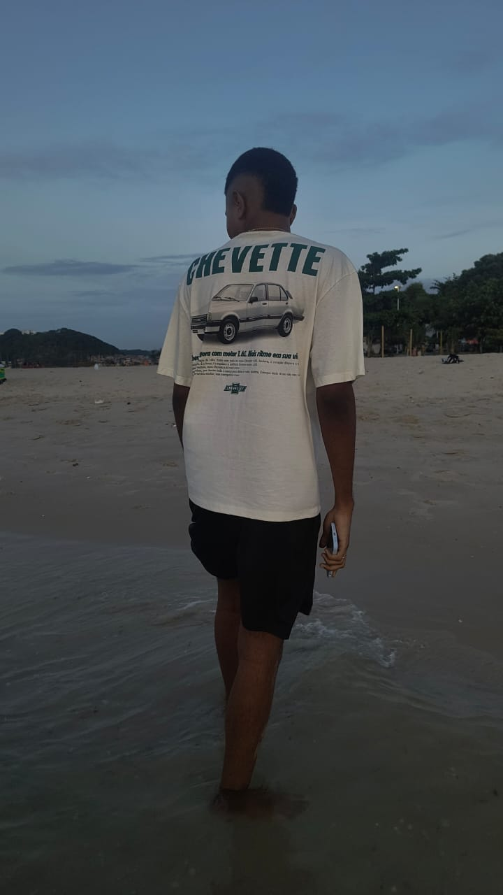

Sobre a Página
Bem-vindo ao meu portfólio pessoal. Este espaço foi desenvolvido para apresentar um pouco da minha trajetória, interesses e objetivos na área de tecnologia. Aqui você encontrará informações sobre meus hobbies, gostos pessoais, habilidades e expectativas profissionais. Como estudante de Análise e Desenvolvimento de Sistemas, busco constantemente aprimorar meus conhecimentos e desenvolver soluções que unam criatividade, aprendizado e tecnologia. Esta página representa uma etapa da minha evolução como futuro desenvolvedor e reflete meu interesse em construir uma carreira sólida na área de desenvolvimento de software.
Sobre Mim
Meu nome é Felipe Oliveira, tenho 17 anos e sou estudante de Análise e Desenvolvimento de Sistemas. Tenho interesse em tecnologia e programação, buscando sempre aprender novas habilidades e ampliar meus conhecimentos na área de desenvolvimento de software.

Meus Hobbies
Em meu tempo livre, gosto de praticar esportes, ouvir músicas, assistir filmes, jogar videogames, assistir jogos de futebol e programar.
Entre meus hobbies favoritos estão:
- Futebol
- Jogos
- Tecnologia
- Carros
Meus Gostos
Tenho interesse por música, especialmente os gêneros funk e trap, além de gostar de filmes de ação e terror. Também sou apaixonado por futebol, acompanhando regularmente campeonatos e jogos, tendo Neymar como uma das minhas maiores referências no esporte. Sou torcedor do Vitória e acompanho também o Corinthians. Além disso, gosto de carros e de conhecer novidades relacionadas ao universo automotivo. Nos momentos de lazer, também aprecio uma boa pizza e momentos de descontração com amigos e família.
Minhas Expectativas para o Curso
Minhas expectativas para o curso de Análise e Desenvolvimento de Sistemas são muito positivas. Espero adquirir conhecimentos sólidos em programação, desenvolvimento de software e análise de sistemas.
Quero aprender a criar soluções tecnológicas eficientes e inovadoras, além de desenvolver habilidades de trabalho em equipe e comunicação. Estou ansioso para enfrentar os desafios do curso e me tornar um profissional competente na área de tecnologia.
Quando formado, desejo atuar como desenvolvedor Back-end ou Full Stack.
Objetivos Profissionais
- Concluir a graduação.
- Conseguir uma oportunidade de estágio.
- Atuar como desenvolvedor Back-end.
- Aprender novas tecnologias.
Minhas Habilidades
| Habilidade | Nível |
|---|---|
| HTML,CSS,JavaScript | Básico |
| Lógica de Programação | Intermediário |
| Git e GitHub | Básico |
| Programação python | Intermediário |
| Programação em C | Intermediário |
Contato
Email: felipegussbr2011@gmail.com
Telefone: (71) 9 8427-8784
GitHub: gustavxx2